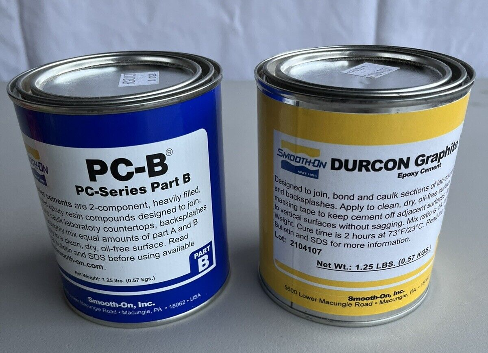

Recipe for Epoxy Resin

Ingredients:
- Plastic Jar
- 20 mg liquid silicone glue
- 20 mg colorless shellac
- 2 mg 70% isopropyl alcohol
Procedure:
- Add 20 mg silicone glue to the plastic Jar
- Mix 20 mg colorless shellac into the jar
- Add 2 mg of Isopropyl alcohol
- Mix until homogeneous
- Let the mixture rest until all bubbles disappear.